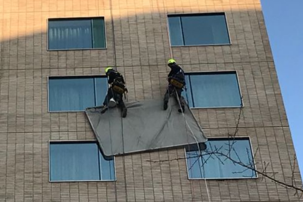

Nuestros servicios y soluciones abarcan desde el diagnóstico de estructuras en altura, pasando por reparaciones, mantenimiento, equipamiento, limpieza e instalación eléctrica y luminaria, entre otros.

Contamos con un equipo de ingenieros y técnicos especializados que asesoran a nuestros clientes en la gestión y ejecución de sus proyectos, entregando soluciones personalizadas que se ajustan a sus necesidades y presupuesto.

Las líneas de vida son sistemas de protección diseñados para asegurar a los trabajadores que realizan labores en alturas elevadas. Consisten en cables o cuerdas resistentes que se instalan estratégicamente en una estructura o edificio, proporcionando un punto de anclaje seguro al cual los trabajadores se sujetan mediante un arnés.

Instalación de redes y mallas para asegurar áreas de trabajo en altura, brindando protección contra caídas de objetos y creando un entorno seguro para trabajadores y transeúntes. También utilizadas como barrera eficaz para impedir el acceso de plagas.

Instalación de equipamiento en áreas elevadas para impedir el acceso de plagas como palomas, murciélagos e insectos voladores. Implementamos soluciones humanas y efectivas que protegen la higiene y la imagen de tu edificio, utilizando métodos no letales y respetuosos con el medio ambiente.

Inspección e identificación de factores ocultos críticos y posibles riesgos para evaluar el estado real de las estructuras. Realizamos un estudio previo para llevar a cabo un trabajo coherente y acorde a la problemática de cada edificación.

Instalación y mantención segura de fachadas y exteriores de edificios o construcciones en altura y todos sus componentes: luminarias, señalética, equipos de climatización, entre otros. Trabajo de precisión realizado con técnicas de acceso por cuerda.
Cuéntanos tu proyecto y te entregaremos un presupuesto gratuito dentro de la región metropolitana.